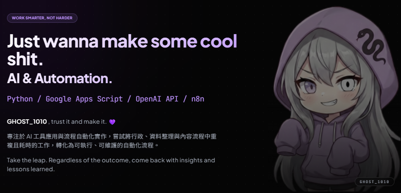
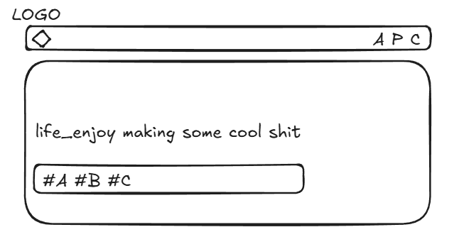

本專案紀錄個人網站 (v1.0) 的建置與部署過程。從早期依賴 WordPress 等高度封裝的 CMS 系統，轉向以 HTML/CSS/JS 實作的半手刻靜態網頁，並最終託管於 GitHub Pages。此轉變旨在提升對底層架構的掌控度與系統擴展性。

全站從排版設計至部署上線，全程採用 VibeCoding 模式與 AI 代理協作完成。
目前版本為基礎靜態展示層，未來將依據需求持續迭代與優化底層效能。
# 系統架構設計：模組化與組件分離
在初期的 Excalidraw 架構規劃中，為確保程式碼的可維護性 (Maintainability)，我選擇將 Navbar 與 Footer 等全域共用區塊拆分為獨立組件，並透過原生 JavaScript 進行動態掛載。
此一目錄結構設計嚴格落實了關注點分離 (Separation of Concerns, SoC) 原則，有效降低各頁面間的耦合度，為後續的專案擴充與統一管理建立穩固基礎。

# 開發流程與 AI 協作除錯 (Debugging)
導入自動化工具大幅降低了程式碼的語法門檻，使開發重心得以從「語法記憶」轉移至「系統邏輯建構」。
本次開發由我方主導核心業務邏輯與介面結構，AI 代理負責代碼的具體實作。實踐過程證明，高效能的協作仰賴於開發者的「精準提問」與對系統的「全局判斷」。
在與 AI 協作的迭代過程中，總結出以下兩項關鍵的工程實務規範：
-
上下文溢出與狀態重置 (Context Window Management)：
當單一對話線程過長，AI 的 Context Window 將超載，導致程式碼幻覺與修復邏輯發散（即所謂的「越修越糟」）。最佳排障策略為：建立明確的斷點，開啟全新對話視窗並注入乾淨的目標程式碼片段，強制重置 AI 的上下文狀態。 -
決策權隔離與動態驗證：
AI 雖具備高效率的代碼生成能力，但系統架構的「判斷」與「選擇」不可讓渡。開發者必須掌握邏輯主導權，配合 Live Server 進行即時渲染反饋，建立「指令輸入 → 視覺驗證 → 邏輯微調」的快速迭代迴圈。
Archived Projects Info


- 過往建置之 CMS (Content Management System) 網站紀錄，作為網頁開發歷程之基準參照：
- ● 2024.03 海大熱帶生物研究社官網 (WordPress)
- ● 2024 HSVI 幽夜工作室官網 (WordPress)